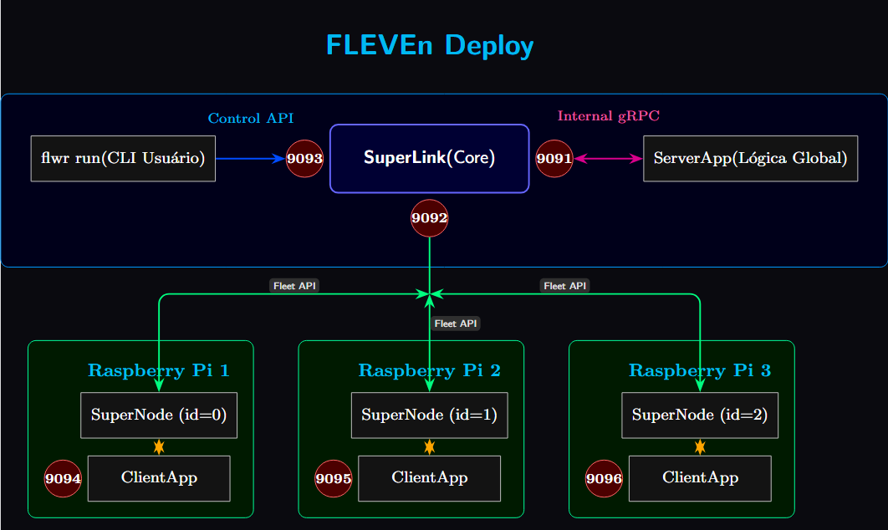

Deploy em Raspberry Pi
Vamos simular o deploy do Fleven em 3 Raspberry Pi conecatado em uma rede Taiscale e um PC como servidor (na mesma rede).

- Em cada Pi clonamos o repositório:
⚠️ Obs. No nosso caso todos os Pi tem usuário
lainf, isso vai ser importante mais na frente. Com isso o Fleven clonado está no seguinte path em cada Pi: -
Agora, no SERVIDOR, configure o endereço do SuperLink. No Flower 1.31 a config de conexão das federações saiu do
pyproject.tomle fica no.flwr/config.toml(lido viaFLWR_HOME), na seção[superlink.fleven-deployment]. Substitua<IP-SERVIDOR>pelo ip da rede Tailscale do servidor (seu PC): -
Como nosso diretório
fleven, em todos os Pi, tem o mesmo caminho/home/lainf/fleven, no SERVIDOR altere opyproject.tomlpara ficar assimNote que, por todos os Pi terem o mesmo caminhodata-base-path = "/home/lainf/fleven/data" metrics-base-path = "/home/seu-usuario/fleven/metrics" # qualquer caminho onde queira ver as métricas salvas (pode ser /home/lainf/fleven/metrics)/home/lainf/fleven, odata-base-pathúnico definido no servidor vale para todos, sem ajuste por Pi. -
Instalação das Dependências:
- Em cada Raspberry Pi (Cliente): Certifique-se de ter um ambiente Python (recomendado usar
venv) e instale o projeto e suas dependências. - No PC (Servidor): Faça o mesmo, mas com o extra
dev, pois o servidor precisa do MLflow e da simulação.
- Em cada Raspberry Pi (Cliente): Certifique-se de ter um ambiente Python (recomendado usar
-
Iniciar o SuperLink (no Servidor): Abra um terminal no seu PC, ative o ambiente virtual e inicie o SuperLink em modo inseguro (já que estamos na VPN Tailscale). Ele vai escutar no endereço definido no passo 2 (
<IP-SERVIDOR>:9093) para oflwr rune na porta 9092 para os SuperNodes. -
Iniciar os SuperNodes (em cada Pi): Conecte-se via SSH a cada Raspberry Pi, ative o ambiente virtual e inicie o
flower-supernode. Cada Pi precisa de umpartition-iddiferente e deve apontar para o IP e porta (9092) do SuperLink.Nota📝. Como é só um SuperNode por Pi, o
--clientappio-api-addresspode ser omitido: ele usa o default local (9094) e não há colisão entre Pis distintos. Esse flag seria necessário nos comandos a seguir só se você rodasse mais de um SuperNode na mesma máquina.- No Pi 1 (partition-id=0):
- No Pi 2 (partition-id=1):
- No Pi 3 (partition-id=2):
- Executar a Federação (no Servidor):
Abra outro terminal no seu PC, ative o ambiente virtual e execute o
flwr run. Ele vai ler opyproject.toml, encontrar a federaçãofleven-deployment, conectar-se ao SuperLink (no endereço<IP-SERVIDOR>:9093) e iniciar o processo.
-
Resultados
- Após o run, explore os resultados localmente com
mlflow ui(abre em http://127.0.0.1:5000) ou publique no DagHub comfleven push. - No
pyproject.tomlvocê pode mudar o nome do experimento viamlflow-experiment-name. - Atualmente prevemos
Energy_Consumptiona partir de 4 features (definidas no contrato):Vehicle Speed[km/h],MAF[g/sec],Engine RPM[RPM],Absolute Load[%].
- Após o run, explore os resultados localmente com
Nota sobre features: as features e o target vêm do contrato (data-contract = contracts/eved.toml) através do FAB, para cada Pi; o servidor envia o fingerprint do contrato em cada mensagem e o cliente recusa participar se o seu contrato não bater, garantindo o mesmo input_size na federação.
O pyproject.toml presente nos Raspberry Pis não é lido durante a execução do ClientApp; ele serve apenas para o pip install -e . saber quais dependências instalar.
Toda configuração vem do servidor via FAB (Flower Application Bundle).
Como o Flower distribui as configurações¶
Componentes Principais (Modo Fleet API): SuperLink (Servidor - PC). Ele gerencia a conexão dos SuperNodes, recebe "Runs" (trabalhos de FL) submetidos pelo flwr run, e encaminha as tarefas (instruções + código + configuração) para os SuperNodes selecionados. Ele escuta na porta 9092 para os SuperNodes e na 9093 para o flwr run.
SuperNode (Cliente - Raspberry Pi): É o agente de longa duração que roda em cada dispositivo cliente. Ele se conecta ao SuperLink, anuncia sua disponibilidade, recebe tarefas, executa o ClientApp correspondente à tarefa recebida, e envia os resultados de volta.
flwr run (Servidor - PC): É um comando CLI de curta duração usado para iniciar um "Run". Ele lê o pyproject.toml do servidor , empacota o código do projeto (ServerApp, ClientApp, utils.py, etc.) e a configuração ([tool.flwr.app.config]) em um arquivo chamado FAB (Flower Application Bundle) , e o submete ao SuperLink pela porta 9093.
ServerApp (Servidor - PC): Código Python de curta duração (definido em server.py) que contém a lógica específica do servidor para um determinado Run (ex: a estratégia FedAvg, inicialização do modelo global). É iniciado pelo SuperLink/SuperExec quando um Run começa.
ClientApp (Cliente - Raspberry Pi): Código Python de curta duração (definido em client.py e usando utils.py) que contém a lógica específica do cliente para um determinado Run (ex: carregar dados locais, treinar/avaliar o modelo). É iniciado pelo SuperNode/SuperExec quando recebe uma tarefa.
Distribuição das Configurações:
O comando flwr run no PC lê o pyproject.toml do PC, incluindo a seção [tool.flwr.app.config] (onde foi definido data-base-path="/home/lainf/fleven/data"). Essa configuração é empacotada junto com o código (client.py, utils.py, etc.) no FAB. O flwr run envia o FAB para o SuperLink.
Quando o ServerApp (rodando no servidor) decide iniciar um round e seleciona os Pis, o SuperLink envia as instruções e o FAB para os SuperNodes selecionados. Cada SuperNode recebe o FAB, descompacta o código e a configuração em um diretório temporário (como /home/lainf/.flwr/apps/...).
O SuperNode inicia o ClientApp (o client.py). O código dentro do ClientApp (a fonte de dados + o pipeline em fleven/data/) recebe a configuração que veio do FAB via Context, não do pyproject.toml local do Pi. O pyproject.toml presente nos Raspberry Pis não é lido durante a execução do ClientApp neste modo; ele serve apenas para o pip install -e . saber quais dependências instalar.
Tabela de Portas¶
| Porta | Componente | Protocolo | Conecta de | Propósito |
|---|---|---|---|---|
| 9093 | Control API | HTTP/REST | flwr CLI |
Comandos admin (run/ls/stop) |
| 9092 | Fleet API | gRPC-rere | SuperNodes | Coordenação clientes - servidor |
| 9091 | ServerAppIo | gRPC | Interno | SuperLink - ServerApp |
| 9094 | ClientAppIo | gRPC | Local | SuperNode - ClientApp (local em cada Pi, usa o default) |
Veja o fluxo de execução com Flower
1. Execução de flwr run. A porta 9093 recebe comandos administrativos. É a API de controle do SuperLink.
-
SuperLink recebe o FAB
-
SuperNodes conectam. A porta 9092 coordena comunicação entre servidor e clientes. É a API para gerenciar a "frota" de SuperNodes
[Rasp1] -> [9092 Fleet API] "Estou disponível!"
[Rasp2] -> [9092 Fleet API] "Estou disponível!"
[Rasp3] -> [9092 Fleet API] "Estou disponível!"
4. SuperLink distribui tarefas¶
[SuperLink via 9092] -> [Rasp1] "Execute treino com estes params"
[SuperLink via 9092] -> [Rasp2] "Execute treino com estes params"
[SuperLink via 9092] -> [Rasp3] "Execute treino com estes params"
5. SuperNodes executam ClientApp¶
[Rasp1]
SuperNode (porta 9092 - SuperLink)
ClientApp (porta 9094 local) <-> Executa o código
Resultado enviado de volta via 9092